Практичний досвід · журнал «ДентАрт» 2014 №4 (77)
Реставрація зуба на корені в адгезивній техніці спрямованої усадки
RESTORATION ON THE TOOTH ROOT IN ADHESIVE TECHNIQUE DIRECTED SHRINKAGE
Вибір методу лікування при відновленні сильно зруйнованих зубів усе ще залишається складним питанням для лікаря-реставратора. Реставрація зубів — це комплекс заходів, спрямованих на відновлення їх анатомічної форми, функції та естетики. При реставрації ж безпосередньо кореня зуба пріоритетними є методи і технології, що відповідають за біоінтеграцію використовуваних матеріалів і функціональну складову. В арсеналі сучасного лікаря достатня кількість методик для відновлення зруйнованих зубів, але основним недоліком більшості пропонованих методів лікування є або надмірна жорсткість, або надмірна еластичність використовуваних матеріалів, що з точки зору законів біомеханіки «працює» проти ослаблених стінок кореня. Нагромаджені в галузі сучасної адгезивної стоматології знання дозволяють поглянути на вирішення проблеми інакше, а саме, з точки зору оцінки біомеханічних властивостей як твердих тканин зубів, так і використовуваних реставраційних матеріалів, а також можливостей сучасних адгезивних систем, призначених для забезпечення міцного з'єднання між реставраційним матеріалом і поверхнями реставрованого зуба.
Ступінь зруйнованості зубів
Виходячи з клінічного стану надальвеолярної частини зубів, виділяють чотири типи коренів, які можна використовувати для відновлення коронкової частини зуба (Ф. Н. Цуканова, 1986):
- I тип — корені зі збереженою над’ясенною частиною (2 мм і більше);
- II тип — корені на рівні ясен зі збереженням стінок;
- III тип — корені, краї яких приховані під яснами;
- IV тип — корені з руйнуванням біфуркації.
Вважаю також важливим при оцінці стану твердих тканин, що залишилися, враховувати обсяг збереженого дентину кореня, що, безсумнівно, може стати визначальним для вибору методу відновлення. Тому пропоную таку класифікацію ступеня зруйнованості кореня:
- I тип — дентин кореня збережений в незмінному вигляді (рис. 1);
- II тип — відсутність дентину кореня залежно від ступеня ураження (рис. 2).
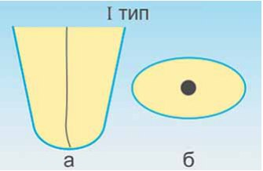
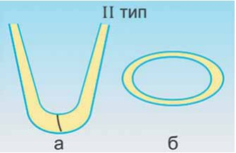
Подальший вибір методу відновлення залежить від обсягу збереженого дентину кореня.
При I типі зруйнованості кореня, коли дентин збережений, відновлення коронкової частини зуба краще провадити з використанням стандартних штифтів заводського виготовлення як більш щадного методу щодо дентину зуба. Погоджуся з думкою багатьох фахівців, що штифти не зміцнюють корінь, а швидше навпаки. Штифт при I типі зруйнованості кореня розглядається як можливість кореневої ретенції при відновленні коронкової частини зуба, а видалення невеликої кількості дентину для установки стандартного штифта, з точки зору щадного препарування твердих тканин зуба, у цьому випадку виправдане порівняно з кореневими вкладками, виготовленими лабораторним методом. У подібних клінічних ситуаціях логічно використовувати пасивні скловолоконні штифти. Хоча модуль пружності скловолоконних штифтів трохи вищий, ніж модуль пружності дентину, ті навантаження, яких зазнають стінки кореня, незначні, оскільки компенсуються досить великим обсягом збереженого дентину. Дентин у цьому випадку виконує роль еластичного обруча, який рівномірно розподіляє по всій поверхні сили, що діють на корінь (рис. 3).
Використання анкерних активних штифтів можливе в тих клінічних ситуаціях, де потрібна підвищена ретенція. Бажано попередньо перевести активний штифт у пасивний, залишивши 2-3 витки різьби для фіксації в устьовій частині кореня. При достатній кількості збереженого дентину концентрація сил у цій частині кореня буде незначною (рис. 4).
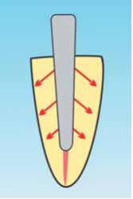
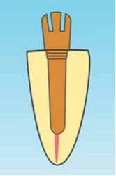
Зовсім інша річ — корені II типу, де дефіцит кількості дентину за обсягом відчутний. У більшості випадків загальноприйнятим вибором методу лікування в таких клінічних ситуаціях є виготовлення кореневих вкладок у лабораторних умовах. Як матеріал для виготовлення вкладок широко використовується хром-кобальтовий сплав або оксид цирконію. Незважаючи на різноманітність застосовуваних сьогодні методик, суттєвим недоліком таких вкладок є надмірна пружність використовуваних матеріалів, які, перевантажуючи тверді тканини реставрованої основи, можуть призвести до поздовжніх переломів коренів. Ускладнення такого роду найчастіше спостерігаються в коренях з тонкими стінками.
Що ж робити в таких ситуаціях? Використання якого матеріалу доцільніше і чому? На ці питання спробуємо відповісти з точки зору оцінки біомеханічних властивостей тканин зубів, а також можливостей, які надає сучасна адгезивна стоматологія. Але спочатку розглянемо, які ж цілі ставляться при відновленні сильно зруйнованих коренів, визначених нами як II тип:
- підтримка твердих тканин зуба, що залишилися;
- амортизація та перерозподіл механічних навантажень.
Для здійснення стратегічного задуму з виконання поставлених нами цілей необхідно трансформувати II тип зруйнованості кореня в I тип, заповнивши при цьому відсутній обсяг втрачених тканин матеріалом, що має біомеханічні показники, подібні до показників дентину (рис. 5). Як видно з порівняльної таблиці значень модуля пружності, таким матеріалом є композит для прямих реставрацій.
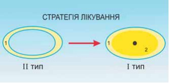
| Матеріал | Модуль пружності, ГПа |
|---|---|
| Епоксидна смола | 4 |
| Дентин | 15 |
| Композитний матеріал для прямих реставрацій | 16 |
| Скловолокно | 40 |
| Емаль | 50 |
| Золотий сплав | 85 |
| Титан | 110 |
| Оксид цирконію | 210 |
| Хром-кобальтовий сплав | 220 |
Полімеризаційна усадка
Усі полімерні матеріали мають усадку. Не позбавлені цього недоліку і композитні пломбувальні матеріали. Полімеризаційна усадка є причиною більшості ускладнень, що виникають при реставрації зубів. Розглянемо основні чинники виникнення полімеризаційної усадки і можливі способи їх усунення при реставрації кореня зуба композитним матеріалом.
1. Час полімеризації. Полімеризація складається з двох фаз: догелевої, коли композит ще піддатливий, і постгелевої, коли полімеризація закінчена і різного роду деформації вже неможливі (рис. 6).
З точки зору полімеризаційної усадки, всі стресові деформації відбуваються під час догелевої фази, і чим коротша ця фаза, тим більшим деформаціям піддається матеріал. У матеріалах світлового отвердіння догелева фаза коротка і, відповідно, показник усадки високий (рис. 7). А в самоотверджуваних матеріалів полімеризація розтягнута в часі, отже, усадка менша і рівномірніша за об’ємом.
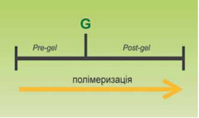
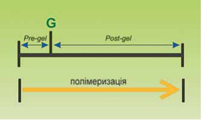
2. С-фактор — форма відновлюваної порожнини. Чим більше поверхонь реставрується в порожнині, тим більшої напруги зазнає композитний матеріал, отже, і показник полімеризаційної усадки вищий. Найгірші умови С-фактора в порожнинах класу I по Блеку. Якщо провести порівняння за формою порожнин сильно зруйнованих коренів II типу з порожнинами класу I по Блеку, можна побачити очевидну схожість (рис. 8).
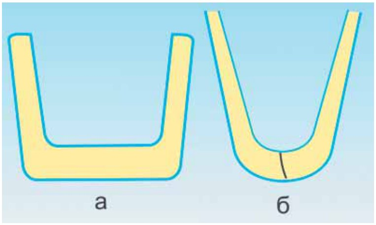
3. Обсяг внесеного матеріалу також впливає на ступінь усадки. Особливо високий показник усадки, який безпосередньо залежить від порції внесеного матеріалу, у композитів світлового отвердіння. Тому одним з методів боротьби з деформаціями у фотополімерів, які виникають під час полімеризаційної усадки, є пошарове внесення матеріалу, що складно технічно здійснити в порожнинах зруйнованих коренів II типу, зважаючи на обмеженість доступу світла.
Техніка спрямованої усадки
Для зниження напруги міжрадикальних зв'язків, що виникають у композиті, Бертолотті запропонував методику для глибоких порожнин класу I по Блеку. Суть методу полягає у використанні в ролі першого шару композиту хімічного отвердіння до 2/3 глибини порожнини, а залишена 1/3 заповнюється матеріалом світлового отвердіння. В основі цього методу лежить техніка спрямованої усадки. Згідно з цією технікою, матеріал хімічного отвердіння, на відміну від фотополімерного композиту, під час полімеризації починає деформуватися у напрямку до тепліших поверхонь зуба, в результаті чого досягається щільне прилягання до стінок і до дна порожнини (рис. 9).
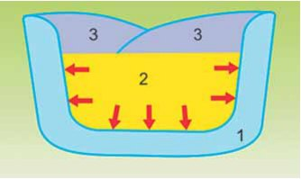
Техніка спрямованої усадки має низку переваг:
- полімеризація розтягнута в часі, в результаті чого знижується стрес, який впливає на стінки зуба;
- матеріал вноситься однією порцією;
- в результаті спрямованої усадки досягається щільне крайове прилягання.
Враховуючи, що як і в порожнинах класу I по Блеку, так і в сильно зруйнованих коренях II типу є значний показник С-фактора, а також обмеженість доступу світла для використання фотополімерних композитів, вважаю доцільним і виправданим застосування самополімеризовуваних матеріалів хімічного отвердіння в техніці спрямованої усадки для відновлення дентину кореня при II типі зруйнованості (рис. 10).
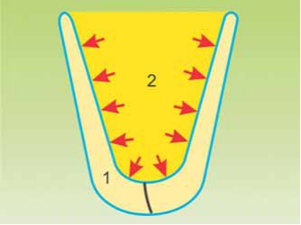
Адгезивна техніка
Адгезивна стоматологія з початку свого розвитку пройшла величезний шлях. За цей час адгезивні системи зазнали революційних змін, тим самим розширивши можливості реставраційної стоматології. Однак при великому різноманітті адгезивних систем на стоматологічному ринку лікареві-реставратору необхідно зробити правильний вибір адгезивної системи у відповідності з матеріалом, що використовується, та конкретною клінічною ситуацією.
За принципом класифікації сучасні адгезивні системи можна розподілити на безліч груп. Розглянемо детальніше деякі з них.
За способом полімеризації адгезивні системи розрізняють як:
- а) світлоотверджувані;
- б) самоотверджувані;
- в) подвійного отвердіння.
За призначенням:
- а) емалево-дентинні (для адгезії світлоотверджуваних матеріалів);
- б) універсальні адгезивні системи (для адгезії світлоотверджуваних, хіміоотверджуваних матеріалів і матеріалів подвійного отвердіння);
- в) багатофункціональні адгезивні системи (для адгезії композитних пломбувальних матеріалів, кераміки, амальгами, сплавів).
Для відновлення зруйнованого кореня зуба в техніці спрямованої усадки матеріалом хімічного отвердіння адгезивна система повинна відповідати таким вимогам:
За призначенням — це повинна бути універсальна адгезивна система, поєднувана з композитами хімічного отвердіння.
За способом полімеризації — враховуючи топографічну локалізацію порожнини і, відповідно, важкодоступність для світла, адгезивна система повинна бути або самоотверджуваною, або подвійного отвердіння.
Якість адгезії в основному залежить від площі контакту матеріалу та реставрованих поверхонь і, безпосередньо, сили адгезії. Також для якісної адгезії важливе значення мають вибір адгезивної системи, якісне препарування, ізоляція робочого поля рабердамом і/або ретракційною ниткою та дотримання протоколу адгезивної техніки.
Як не парадоксально, але з точки зору сили адгезії до решти тканин зуба при II типі зруйнованості кореня у зв'язку з більшою площею реставровуваних поверхонь ситуація виявляється ліпшою у порівнянні з I типом зруйнованості кореня, де дентин збережений у незмінному вигляді, а для установки штифта та додаткової ретенції навіть доводиться жертвувати невеликою кількістю умовно-інтактного дентину кореня.
Концентрація внутрішніх напружень
Після реставрації кореня в адгезивній техніці спрямованої усадки необхідно провести реставрацію коронки зуба. Для однорідності конструкції за хімічним складом культьова частина може бути відновлена з використанням композитного матеріалу на основі органічної матриці BISGMA або її модифікацій, таких як UDGMA, TEGDMA і D3MA, незалежно від способу полімеризації. Єдиною умовою повинна бути адгезивна сумісність використовуваних матеріалів хімічного та світлового отвердіння.
Напруги, що виникають у композиті, будуть концентруватися в точках докладання жувальних навантажень (рис. 11). В результаті у цих точках буде надмірне накопичення втоми матеріалу, що при циклічності навантажень може з часом призвести до часткового або повного руйнування реставрації. Ставлячи собі питання, армувати чи ні, ми повинні передусім мати на увазі не зуб, а композитну конструкцію в цілому. Весь наш практичний досвід відновлення сильно зруйнованих зубів в адгезивній техніці спрямованої усадки засвідчує необхідність армування над’ясенної і кореневої частин композитної конструкції. Як армувальний елемент, ми використовуємо скловолоконний штифт, до речі, методика дуже схожа зі стовпчастим армуванням, широко використовуваним для зміцнення фундаменту при спорудженні будинків. Скловолоконний штифт у нашій клінічній ситуації виступає як «подрібнювач» внутрішніх напружень, що не дозволяє деформаційним силам концентруватися в ділянках докладання жувальних навантажень, розподіляючи, таким чином, ці сили рівномірно по всій площині композитної реставрації (рис. 12).
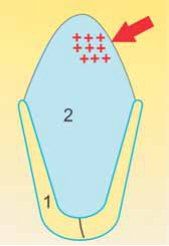
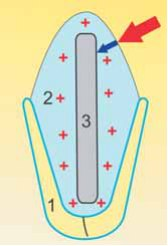
Подальше остаточне функціально-естетичне відновлення зуба можна провести як прямим методом, так і непрямим.
Клінічний приклад комплексної реставрації зуба
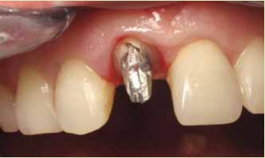
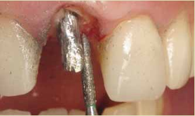
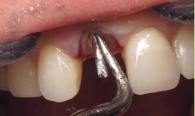
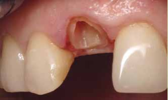
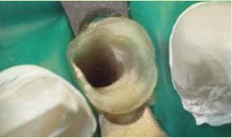
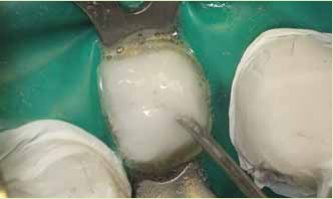
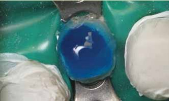
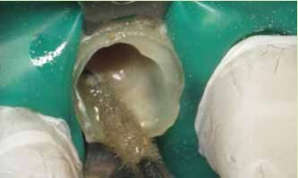
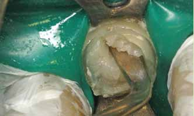
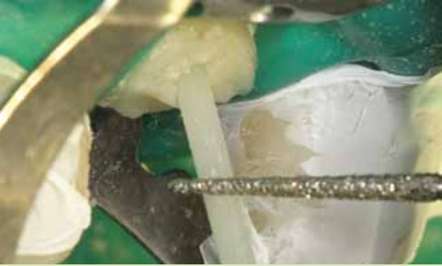
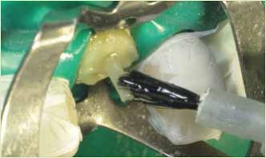
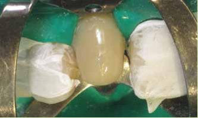
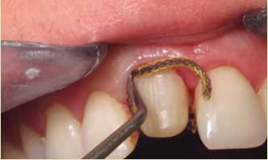
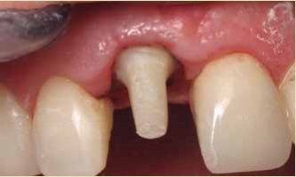
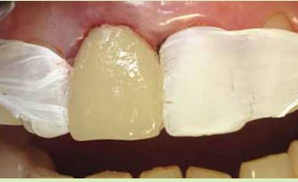

Висновки
Для вибору оптимального методу відновлення зруйнованих зубів разом з оцінкою їх надальвеолярної частини доцільно враховувати ступінь зруйнованості коренів, орієнтуючись за обсягом збереженого дентину кореня. Таким чином, виходячи зі сказаного раніше, автор пропонує два типи відмінності:
I тип зруйнованості кореня — дентин кореня збережений у незмінному вигляді;
II тип зруйнованості кореня — дентин кореня відсутній залежно від ступеня ураження.
При I типі зруйнованості коренів коронкову частину зуба рекомендується відновлювати в адгезивній техніці з використанням штифтів фабричного виготовлення, із забезпеченням стабільної кореневої ретенції як більш щадного методу щодо дентину.
При II типі зруйнованості коренів для відновлення втраченого дентину кореня рекомендується використовувати адгезивну техніку спрямованої усадки композитним матеріалом хімічного отвердіння, який має показник модуля пружності, подібний до дентину.
Також у коренях II типу зруйнованості слід використовувати армування композитної реставрації скловолоконним штифтом для зниження і рівномірного розподілу внутрішніх напружень.
Для остаточного відновлення форми зуба слід проводити прямі або непрямі реставрації в адгезивній техніці із застосуванням емалево-дентинних адгезивів або багатофункціональних адгезивних систем у разі використання різнорідних матеріалів, таких, наприклад, як кераміка і композити.
Література
- Ахмад И. Эстетика непрямой реставрации. –2009 –С.115-140.
- Иоффе Е.С. Post — новейшая система для восстановления зубов после эндотерапии//Новое в стоматологии. –1997. —№4.
- Мерлати Д., Тентруп А., Менгини П. Эндоканальные штифты – новый продукт из двуокиси циркония/Клиническая стоматология. –2000. –№3.
- Николишин А.К. Современная эндодонтия. Полтава, 1998.
- Нурт Р.В. Основы стоматологического материаловедения. –2004. –С.50-60.
- Радлинский С.В. Биомеханика зубов и реставрация//ДентАрт. –2006. –№2. –С.42-48.
- Руле Ж., Уилсон Н., Фуцци М. Передовые технологии в оперативной стоматологии, 2005. –С.191-211.
- Сарфати Э., Хартер Ж.-К., Регите Ж. Развитие концепции восстановления депульпированных зубов//Клиническая стоматология. –1997.—№1.
- Хидирбегишвили О.Э. Современная кариесология, 2006. –С.270-285.
- Храмченко С.Н., Казеко Л.А., Горегляд А.А. Современные адгезивные системы/Учебно-методическое пособие, 2008.